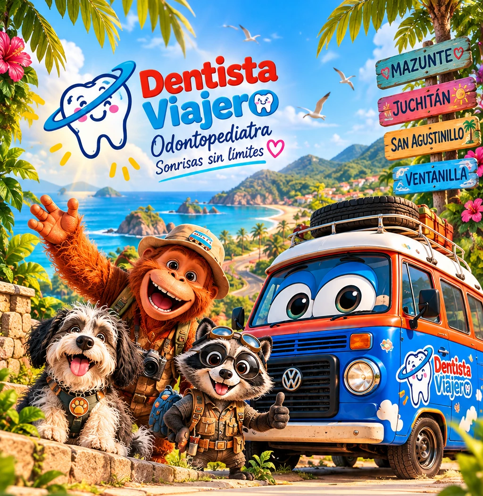
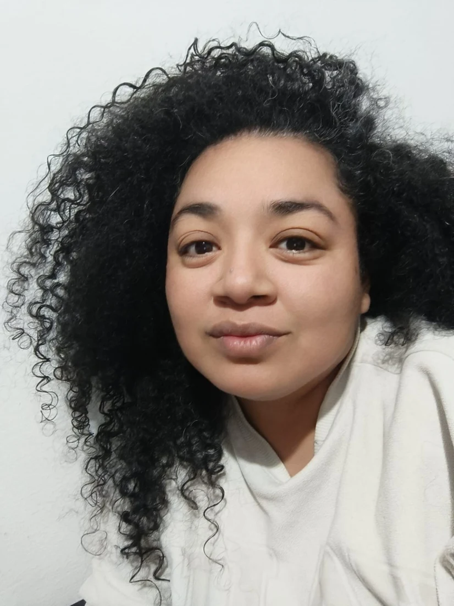

¡Bienvenidos a bordo!
Odontopediatría con respeto, diversión y prevención
Después de agendar, confirma tu cita por WhatsApp.
Quiénes somos
Nuestra historia
Dentista Viajero nació para acercar la odontopediatría y la prevención a las familias, desde el consultorio en Las Choapas hasta las jornadas en comunidades a bordo de La Niña.
Nuestro equipo
Dr. Valentín Naif Hamsho Domínguez, odontopediatra (cédula de especialidad 8536800), y Annie Arenas García, partera de Partera Viajera.
Odontología Divertida
Atendemos a los niños con juego, escucha, respeto y confianza, adaptándonos a sus necesidades.
Matrescencia
El acompañamiento de Annie integra saberes tradicionales, atención responsable y cercanía con las familias.
Misión
Acercar prevención, educación y acompañamiento humano a las familias.
Visión
Llegar a más comunidades con proyectos accesibles y respetuosos.
Proyectos
Consultorio y jornadas móviles, campañas escolares, Club de Pippo y Partera Viajera.
💬 Preguntar por WhatsAppOdontología infantil
Atención infantil
Revisiones, restauraciones, prevención y seguimiento del desarrollo dental en niñas, niños y adolescentes.
Nuestra filosofía
Explicamos cada procedimiento con palabras sencillas y procuramos una experiencia respetuosa.
💬 Preguntar por WhatsAppPrevención
Cuidar antes que reparar
Revisiones preventivas, limpieza, selladores, orientación de higiene y evaluación del riesgo de caries.
Primera visita
La prevención empieza con la salida del primer diente y, a más tardar, alrededor del primer cumpleaños.
💬 Preguntar por WhatsAppOrtopedia maxilar
Crecimiento y mordida
Valoración del desarrollo de los maxilares, mordida y hábitos orales.
Señales de atención
Respiración bucal frecuente, ronquidos, mordida cruzada o hábitos persistentes ameritan valoración individual.
💬 Preguntar por WhatsAppOdontología del embarazo y bebé
Durante el embarazo
Valoración de encías y dientes, higiene y atención odontológica indicada con las precauciones correspondientes.
Primeros cuidados del bebé
Orientación sobre dentición, higiene, alimentación y hábitos saludables desde el inicio.
💬 Preguntar por WhatsAppPartería con Annie

Partera Viajera · Matrescencia 🌸
Matrescencia
Acompañamiento cercano y respetuoso durante embarazo, nacimiento y posparto.
Servicios
Preparación al parto, masaje prenatal, acompañamiento del parto, sobada y manteada, posparto, lactancia y bienestar femenino, según valoración y disponibilidad.
Seguridad
Los servicios se acuerdan de forma individual. El parto fuera del hospital requiere planificación y acceso a traslado médico.
Beneficio para familias
Descuento de $200 MXN en la primera consulta con Annie para familias con folio de Dentista Viajero o niño registrado, sujeto a verificación privada.
💜 Contactar a Annie · WhatsAppCampañas escolares
Escuelas y comunidades
Pláticas de salud bucal, revisiones básicas y jornadas preventivas mediante acuerdos con cada institución.
Solicita información
Pregunta por próximas jornadas y beneficios vigentes.
💬 Preguntar por WhatsAppEl Club de Pippo
Aprendemos jugando
Pippo, Rumi y Peluche enseñan hábitos de salud bucal mediante historias, videos y aventuras.
💬 Preguntar por WhatsApp